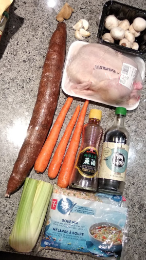
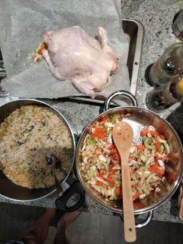
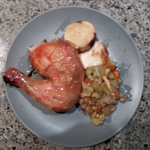

Stuffed Chicken
  
Ingredients:
- Chicken, vegetables, rice (use whatever vegetables you want), soy sauce, seasame oil
How to make it:
- Cook the rice (not completly) and stuff everything into the chicken
- Bake on 375 for 1.5 hours
- Sprinkle seasome oil on the chicken 10 min before the end of the baking